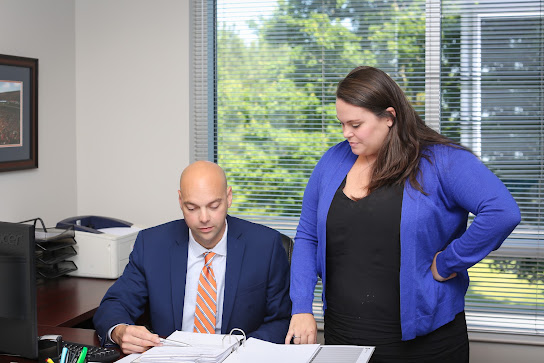

Case Intake Helps Lawyers Investigate
An initial client conversation should capture the essentials without turning into an unstructured narrative. The intake note can distinguish what the person personally observed from what others reported, preserve relevant dates, and identify names or organizations that may need to be contacted. It can also note unanswered questions and any limits on obtaining documents. For a Car Accident Lawyer in Birmingham, this structure creates a clear agenda for the next conversation. It gives a Car Accident Lawyer in Birmingham a consistent reference point when new information arrives, reducing confusion between established facts, working assumptions, and matters that still require confirmation.
Further review is more productive when each request has a defined purpose. A legal professional may compare dates across separate communications, confirm the identity and availability of people mentioned in the intake, and note which records are missing. That exercise can reveal whether an apparent contradiction comes from imprecise wording or from a substantive difference that deserves closer attention. A Car Accident Lawyer in Birmingham can use targeted follow-up to resolve those distinctions, while a Car Accident Lawyer in Birmingham can help explain what additional information would make the file more complete. Written notes from each exchange preserve the reasoning behind later requests and reduce reliance on memory.
As the matter develops, the working file should remain a living reference rather than a one-time form. New messages, revised contact details, and changes in witness availability can be added with the date and source of each update. Clients should know which developments merit prompt attention and which questions remain open, so they can provide useful information without guessing at its significance. A Car Accident Lawyer in Birmingham can use that shared structure to communicate clearly, prioritize the next steps, and revisit earlier assumptions when dependable facts change. Careful maintenance supports sound judgment while preserving a transparent record of how the matter has evolved.

Birmingham Venue Affects Crash Litigation
Jurisdictional questions can determine which court has authority, what procedural rules apply, and how participants must engage with a case. A Car Accident Lawyer in Birmingham can examine those connections, while a Car Accident Lawyer in Birmingham may help explain whether the proposed forum is legally appropriate and practically workable. This analysis becomes more important when the parties are based in different areas or when more than one legal system may be involved.
Several considerations may shape the analysis, including the relationship between the incident and the proposed court, the location of relevant businesses, and special rules for claims involving public agencies or commercial operators. A Car Accident Lawyer in Birmingham can assess whether those factors support the selected venue, and a Car Accident Lawyer in Birmingham may help identify conflicts that could lead to added expense or a challenge to the court's authority. Clarifying these issues can provide a steadier basis for later decisions about the claim.
Practical concerns also deserve attention. Travel demands, accessibility, administrative costs, and the availability of appropriate local services may affect whether participants can remain engaged throughout the matter. Guidance from a Car Accident Lawyer in Birmingham can connect those realities with jurisdictional requirements and support a process that is organized, proportionate, and responsive to the circumstances.
Attorneys For Serious Road Trauma
After a collision, early organization can protect the accuracy of the record. Preserving photographs, repair estimates, medical documentation, and contact details for people who saw what happened can help prevent important information from being lost, while avoiding speculation in written statements or social media posts. An experienced Car Accident Lawyer in Birmingham may help identify useful evidence and explain which facts require further verification. A separate review by an experienced Car Accident Lawyer in Birmingham can help distinguish immediate concerns from issues that may emerge as recovery continues.
Medical evidence often shapes the understanding of both an injury and its likely effects. Treatment notes, diagnostic reports, rehabilitation recommendations, and employment records can provide a clearer basis for evaluating physical limitations and financial impact. An experienced Car Accident Lawyer in Birmingham may help connect those materials into a consistent account, while an independent Car Accident Lawyer in Birmingham can assess whether additional documentation or specialist input would strengthen the claim. Clear, factual communication and careful recordkeeping can reduce avoidable misunderstandings during discussions with other parties.
A well-supported claim should account not only for current losses but also for reasonably foreseeable needs, including continuing care, changes in work capacity, and lasting effects on daily life. An experienced Car Accident Lawyer in Birmingham can help explain the significance of available evidence, outline possible paths toward resolution, and encourage informed decisions without promising a particular result. Choosing professional support that values accessibility, careful analysis, and regular updates can make a demanding process easier to understand and manage.
WETTERMARK KEITH
WETTERMARK KEITH
100 Grandview Pl Suite 530, Birmingham, AL 35243
(866) 630-4111